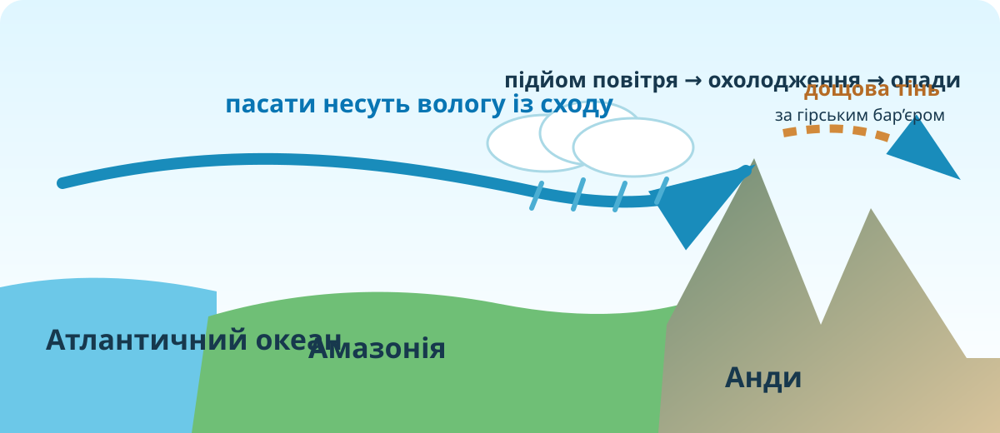
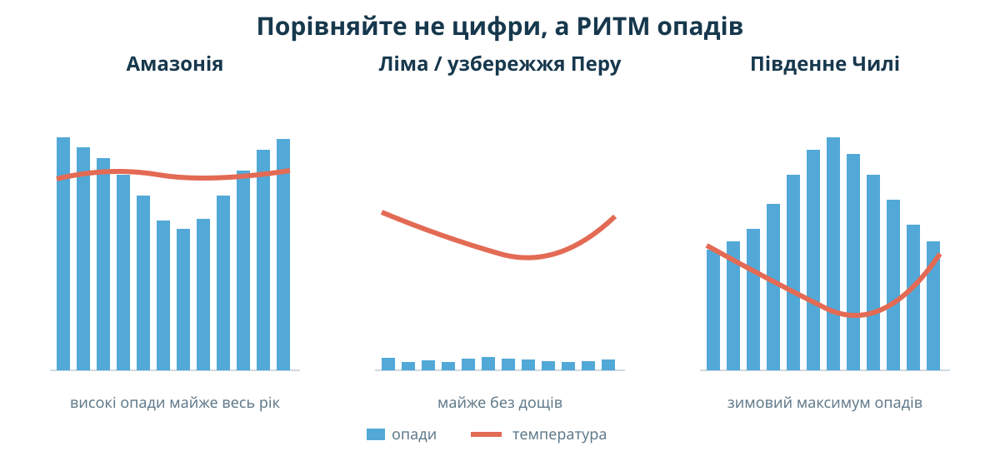

1Почніть із суперечки
Гіпотеза А
Материк вологий просто тому, що через нього проходить екватор.
Гіпотеза Б
Головна причина — волога з Атлантики, яку пасати переносять далеко вглиб материка.
Гіпотеза В
Анди не тільки отримують опади, а й різко перерозподіляють їх між східними й західними схилами.
2Прочитайте материк як кліматичну машину
© OpenStreetMap contributors. Простежте Атлантичне узбережжя, Амазонську низовину, Анди й тихоокеанський берег.
1. Відкритість на схід
2. Бар’єр на заході
3. Просторовий прогноз
3Перевірте прогноз супутниковими даними
NASA: Total Rainfall / GPM IMERG
NASA публікує карти місячної суми опадів за супутниковим набором IMERG. Сезонна смуга сильних дощів зміщується навколо екватора, а Південна Америка має виразний вологий сезон.
Відкрити карти опадів NASA ↗NASA Worldview ↗Copernicus Browser ↗Завдання на доказ
Знайдіть на карті опадів район Амазонії. Потім порівняйте його з тихоокеанським узбережжям Перу й півночі Чилі.
4Анди: бар’єр, який робить контрасти

Фото з МКС: NASA Earth Observatory. Джерело ↗. NASA описує перехід від вологої Амазонії на схід від Анд до сухих умов Атаками на заході.

Поясніть механізм
Контрприклад Атаками
5Кліматограми: впізнайте режим, а не назву

Схема навчальна: порівнюйте форму річного ходу, а не використовуйте її як джерело точних місячних значень.
А
Високі опади майже щомісяця, мала річна амплітуда температур.
Б
Опадів майже немає, температури помірно теплі через вплив холодної Перуанської течії.
В
Зимовий максимум опадів, літо сухіше.
6Зберіть причинний ланцюг
7Коротке відео з КТП
Після перегляду не переписуйте відео. Випишіть лише один доказ, який підтвердив Вашу гіпотезу, і один факт, який змусив її уточнити.
8Проміжний висновок — ключ до теорії
Сформулюйте 3–5 речень. Обов’язково використайте слова Атлантика, пасати, Анди, Амазонія та згадайте один контрастний сухий район.
Теорія після дослідження
Чому материк дуже вологий
1. Значна частина Південної Америки лежить у низьких широтах, де інтенсивне нагрівання сприяє конвекції.
2. Схід материка відкритий до Атлантики. Пасати переносять вологе повітря далеко вглиб низовин.
3. Амазонська низовина — величезний простір із рясним зволоженням; лісова евапотранспірація повертає багато водяної пари в атмосферу й підтримує регіональний кругообіг.
Чому опади розподілені нерівномірно
4. Анди — потужний орографічний бар’єр. Під час підйому повітря охолоджується, конденсується й дає опади на навітряних схилах.
5. За горами виникає дощова тінь. На тихоокеанському узбережжі Перу й Чилі сухість додатково підтримує холодна Перуанська (Гумбольдтова) течія та субтропічні антициклони.
6. Південна частина материка вже лежить у помірних широтах, де важливі західні вітри й інший сезонний режим.
9CER: доведіть головне твердження
Питання: Чому поєднання Атлантики, пасатів і Анд краще пояснює клімат Південної Америки, ніж проста фраза «материк лежить біля екватора»?
C — Claim
E — Evidence
R — Reasoning
Домашнє завдання
Базове
Опрацюйте §35. Складіть причинну схему з 6 ланок «океан → повітря → опади → рельєф → контрасти клімату».
Електронний підручник / §35 ↗Доказове
Оберіть одну пару міст/районів (Манаус — Ліма; Белен — Антофагаста; Буенос-Айрес — Сантьяго). Знайдіть кліматограми й напишіть 5 речень: який чинник найкраще пояснює різницю?
Фінальний тест • 10 балів
Тест відкриється лише після заповнення даних учня.
Джерела уроку
NASA Earth Observatory — Total Rainfall (GPM IMERG)
NASA Earth Observatory — Looking Down on the Andes